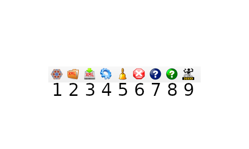
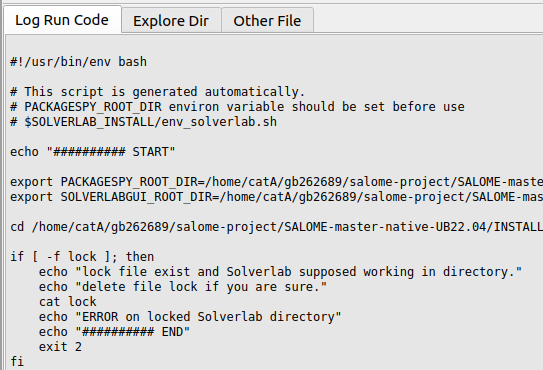

SOLVERLABGUI main widget¶
The main window of SOLVERLABGUI is composed of three parts:
The toolbar , at the top. It is used to perform quick actions.
The tree view , at the left. It is used to import and modify data.
The content tab , at the center/right. Its role is detailed below.

The toolbar¶
This toolbar contains icons related to actions, from left to right:
new SOLVERLAB data: create a SOLVERLAB case from scratch
load SOLVERLAB data: load a previously saved case, serialized in an
xmlfilesave SOLVERLAB data: save current the SOLVERLAB case, serialized in an
xmlfilelaunch SOLVERLAB computation
refresh the tree view
clear SOLVERLAB data model, remove SOLVERLAB data tree (in
SolverlabObjectwidget)open SOLVERLABGUI documentation (i.e. the present documentation)
open SOLVERLAB documentation
load an example in SOLVERLABGUI. Open the directory of built-in examples.
The tree view¶
The tree view allows to see and modify the content of SOLVERLAB data.

Modify tree view items’ values¶
There are some values as leaves of tree. Names and tooltips are almost as SOLVERLAB code naming usage.
Simple scalar values. User can modify value on left-double-click, selecting tree item nodes hovering column value.
Other specific values. User can modify value on right-click, to get a contextual menu for modification, selecting tree item nodes hovering columns name and value.
Note
Some values are context specific and can be displayed only when they are needed.
{kind=link}
Delete/Insert menu¶

Insert, delete and reset all or selected part of the data tree. To activate this menu, right-click on ‘name’ of tree item nodes (at right of item icon). The concerned items are usually not leaves (i.e. items without a value).
The content tab¶
Log Run Code widget¶
This widget displays a log of SOLVERLAB execution.
SOLVERLAB code is executed when clicking the Launch solverlab calculus button in the toolbar.
{kind=link}
{kind=link}
Other File widget¶
This widget displays the content of the selected .med file, using the MEDCoupling API.

By right clicking on the fileMed field, in the tree view, the content
of the file can be dumped to ASCII format by clicking on Dump ascii content context menu.